windows命令混淆
1.环境变量混淆
查看已设置环境变量：set
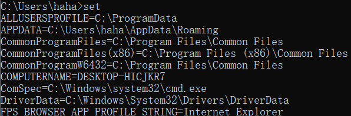
设置环境变量：set test=cmd /c powershell
执行：%test%
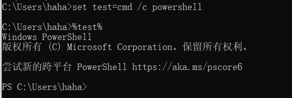
该方法可以用与静态检测绕过，要对其进行日志监测还需要装sysmon。
2.双引号混淆
双引号没有什么特殊的含义，它可以帮助文件或目录保持一个整体，而不会被中间的空格所切割。
一个简单的例子就是目录名中间有空格。
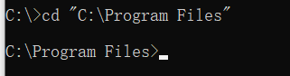
用法即是我们可以在敏感文件名、命令中间添加双引号。
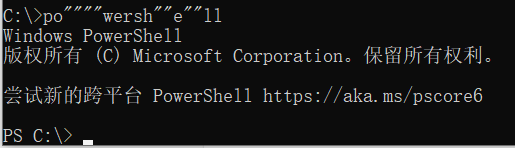
3.转义符
转义符(^)也可以做为切割文件名的一个符号，但是该符号不能够连续输入。
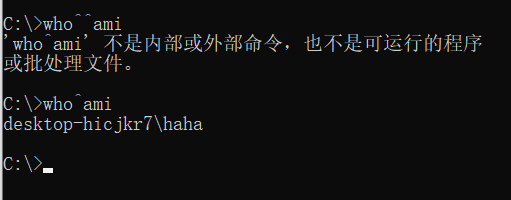
转义符也可以作为一个换行
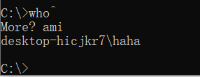
4.垃圾分隔符
先来了解一下管道，通过管道结合cmd我们可以执行前者。
1 | echo calc | cmd |
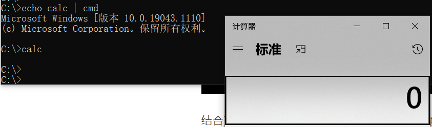
结合环境变量，再引入@符，可以发现仍然能够执行。
1 | cmd /c "set x=c@alc & echo %x:@=% | cmd" |
5.字符串提取
cmd中也可以通过环境变量的方式进行变量值的字符串提取。
如：set a=abcd，要想提取里面的某个字符串，可以通过
1 | %a:~0,1% |
其中0表示从第几位开始提取，1表示提取几个字符串。
所以，我们可以这样去执行一个计算器。
1 | set a=abcd & %a:~2,1%alc |
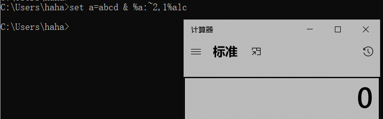
6.圆括号
成对的圆括号（）也会出现在命令参数中，也不影响命令的执行。圆括号表示嵌入子命令组，同样被cmd.exe参数处理器进行解释
1 | cmd /c "(((ipconfig)))" |
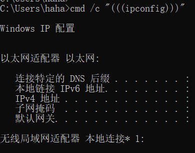
7.逗号与分号
逗号与分号某些情况可以当作一个终止符号或者代替空格。
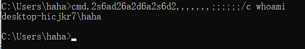
8.循环语句查找
我们也可以通过for循环去查找我们所要的字符串执行，可以避免在命令行输入特殊的字符。
首先要说明for循环的几个参数及语句的意义。
1 | 1.for /f "条件" in "范围" |
例句
1 | FOR /F “tokens=4 delims=\“ %g IN (“c:\windows\system32\powershell\”) do %g |
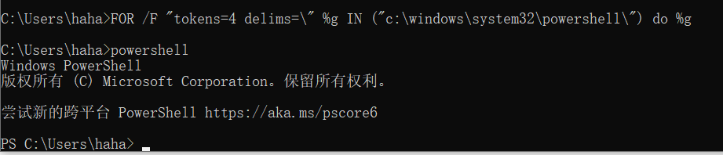
自动化：
https://github.com/danielbohannon/Invoke-DOSfuscation
9.与lolbins配合
有一些混淆需要配合指定的程序使用，下面是方法
1.选项字符替换
这个其实没啥说的，无非就是比如像-n，替换为/n，看图
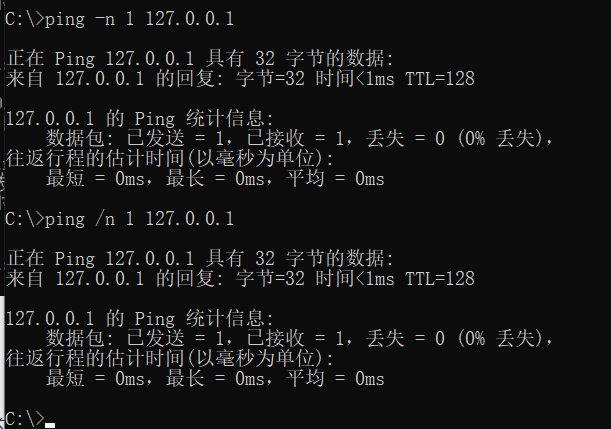
2.字符替换
利用对unicode的处理问题，当使用 ˪、ˣ 和 ˢ 等字符。一些命令行解析器将它们识别为字母并将它们分别转换回 l、x 和 s。
unicode地址如下
https://www.unicode.org/charts/nameslist/n_02B0.html
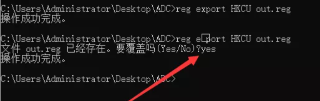
3.参数简写
这个可以拿powershell为例，其-e参数与下面所有写法同理
1 | -e |
各lolbin所支持的方法：
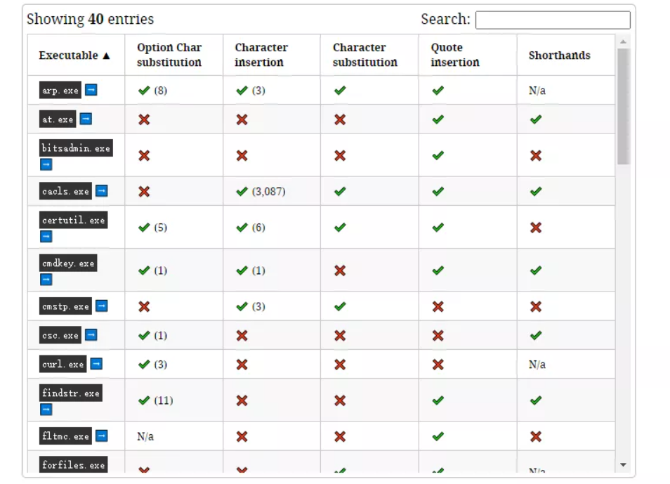
自动化工具地址：https://github.com/wietze/windows-command-line-obfuscation